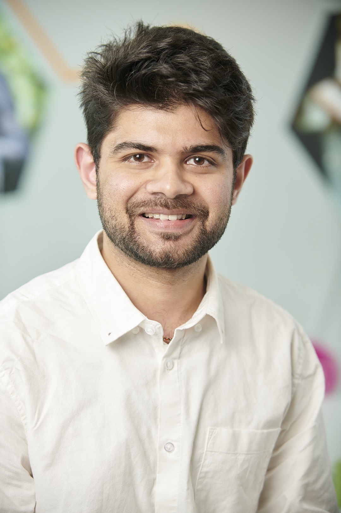
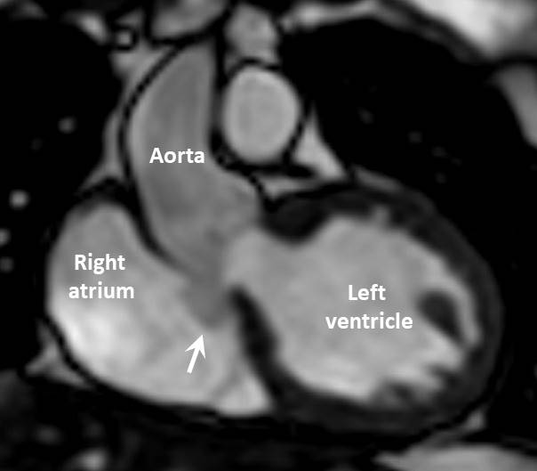

Multielectrode Array Analysis
Built reusable HD-MEA analysis workflows for large neural datasets, improving throughput and consistency of electrophysiology analysis.
View RepositoryI build scalable data and machine-learning pipelines for high-dimensional neural signals, with a strong foundation in systems engineering, automation, and performance optimization.

I design end-to-end computational workflows that turn noisy, high-volume biosignal data into reliable, decision-ready outputs. My work spans data ingestion, preprocessing, feature engineering, model development, and deployment-aware optimization.
With experience across academic research and industry engineering, I combine scientific rigor with production thinking: robust code, reproducible pipelines, and measurable performance.
PhD Student, Biomedical Engineering — University of California, Davis
MSc Computational Neuroscience & Cognitive Robotics — University of Birmingham
Scalable data pipelines • ML for signal-rich data • C++ systems engineering • CI/CD automation
Built reusable HD-MEA analysis workflows for large neural datasets, improving throughput and consistency of electrophysiology analysis.
View Repository
Developed modelling components for visual attention analysis and translated research methods into reproducible computational workflows.
Read Paper
Implemented a complete ECoG motor-imagery ML pipeline, from preprocessing and feature engineering to robust model evaluation.
View Repository
Engineered segmentation workflows for cardiac MRI data to enable structured, quantitative analysis and downstream automation.
View Repository
Implemented server infrastructure for robotics simulation with emphasis on reliability, modularity, and integration performance.
View Repository